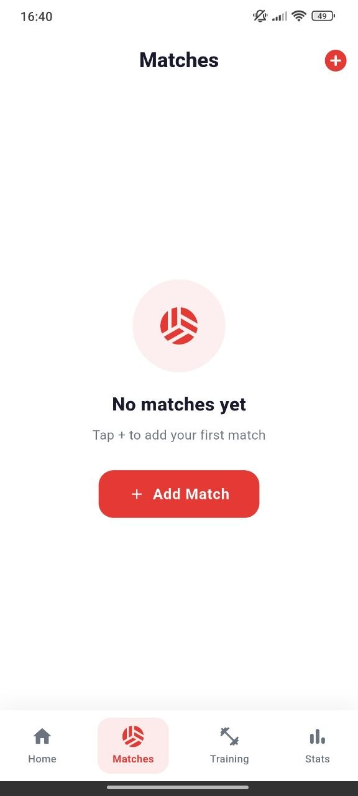
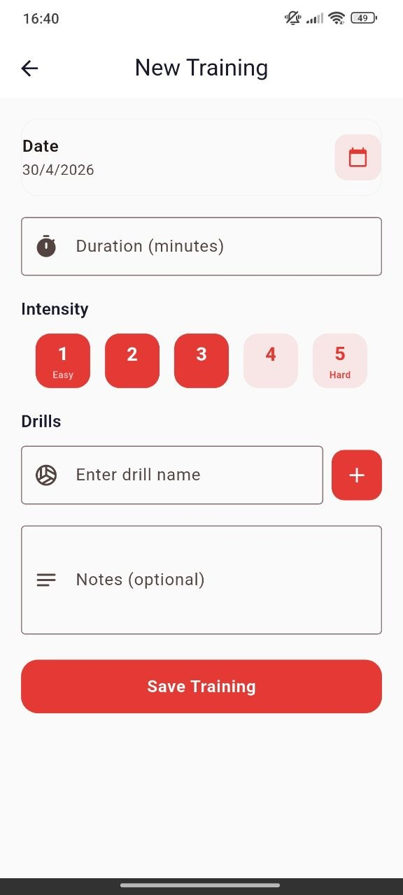
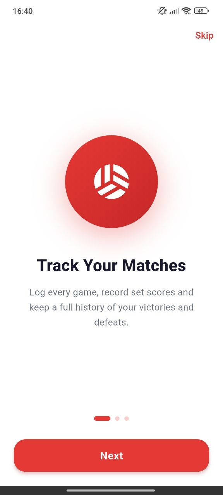
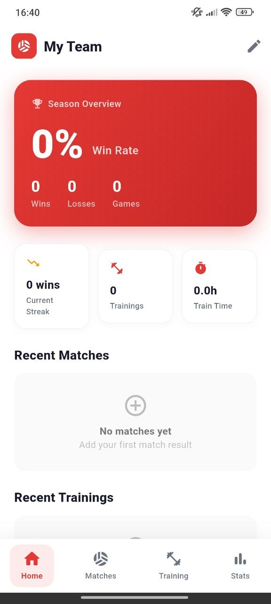
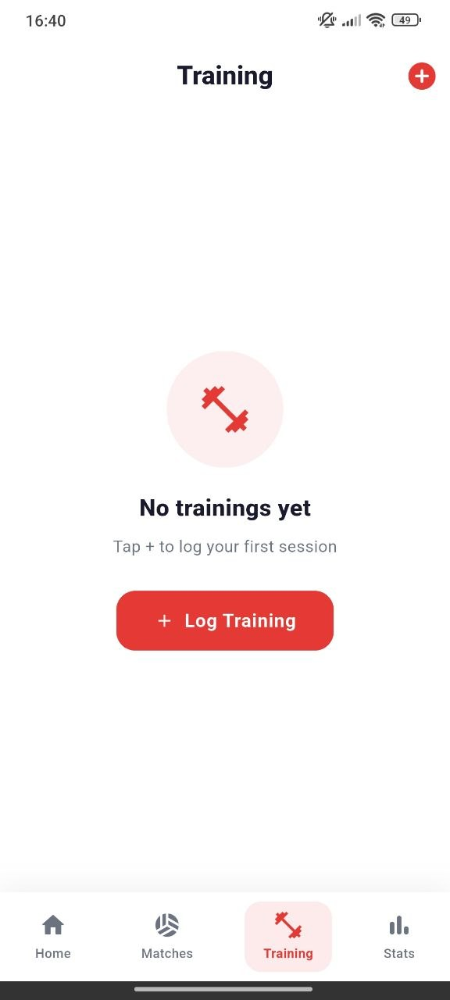
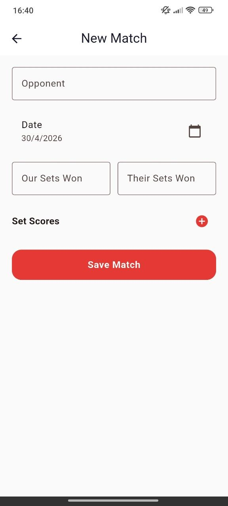
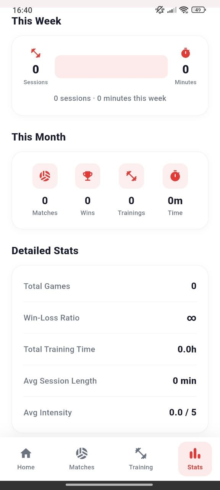

01
Match results
Add opponents, dates, sets won, sets lost and detailed set scores in a structured flow.
Winax Stats Tracker helps athletes record match results, log training sessions, monitor win rate, analyze weekly progress and build a consistent performance routine.



Simple enough for daily use, powerful enough to understand your rhythm, training load and competitive progress over time.
Add opponents, dates, sets won, sets lost and detailed set scores in a structured flow.
Save duration, intensity, drills and session notes to keep your weekly routine visible.
Follow wins, losses, sessions, total time, win-loss ratio and monthly summaries.
Track consistency and see whether your training and match activity is building momentum.
Add matches and training sessions quickly with clear, mobile-friendly forms.
Built as a simple free service with privacy-focused usage and straightforward policy terms.
The interface uses strong red accents, soft white cards, large readable numbers, simple navigation and focused input screens so every session is easy to record.

A premium showcase built around the strongest visual moments: dashboard, matches, match form, training, training form and statistics.




Add opponent, date, sets won, sets lost and set scores after every game.
Save duration, intensity, drill name and notes after each training session.
Check season summary, weekly sessions, monthly totals and detailed performance data.
Use the app as a habit layer to stay aware of your progress and training rhythm.
Winax Stats Tracker gives every athlete a simple way to transform matches and workouts into readable numbers that support better planning.
No complicated dashboards. No confusing setup. Just clean performance tracking for matches, training and stats.
“The dashboard makes the season feel easy to understand.”
Match player“Training logs help keep discipline visible week after week.”
Athlete“Stats are clear, simple and actually useful.”
Team userDownload Winax Stats Tracker and keep every match, training session and performance metric in one clean place.